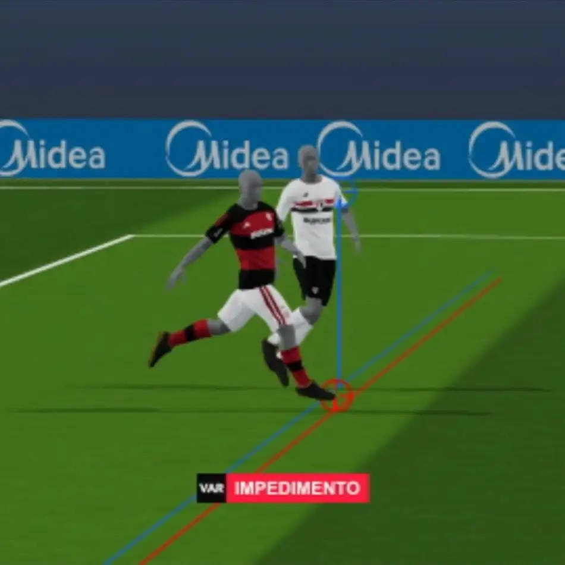

O Impedimento Semi-Automático no Brasil Já Traz Discussões
Publicado em por Lucas S.
Na primeira rodada com a implementação da tecnologia, lance em Flamengo x São Paulo já causa polêmica.
Leia mais...

Na vigésima rodada do Brasileirão 2026, Flamengo e São Paulo empataram em 1 a 1 no Maracanã, resultado este que foi decidido pela tecnologia do impedimento semi-automático, que anulou o gol de Samuel Lino aos 45 do segundo tempo ao flagrar posição irregular de Wallace Yan, que participou da jogada do gol.
A Tecnologia
São cerca de 30 câmeras em diversos locais do estádio, que gravam toda a partida em 4k e a 100 quadros por segundo, sendo capazes de criar réplicas digitais de todos estes quadros.
O “Nós Contra Eles”
O tratamento do torcedor brasileiro com a arbitragem sempre foi baseado em um grande “estamos sendo prejudicados” ou “eles estão sendo favorecidos” o que mostra uma grande vitimização quase que “cultural” do brasileiro, que não consegue reconhecer um erro de um terceiro ou um demérito de “sua parte”, pois não importa o meio que algo aconteça, é sempre uma “grande conspiração contra mim/meu time”.